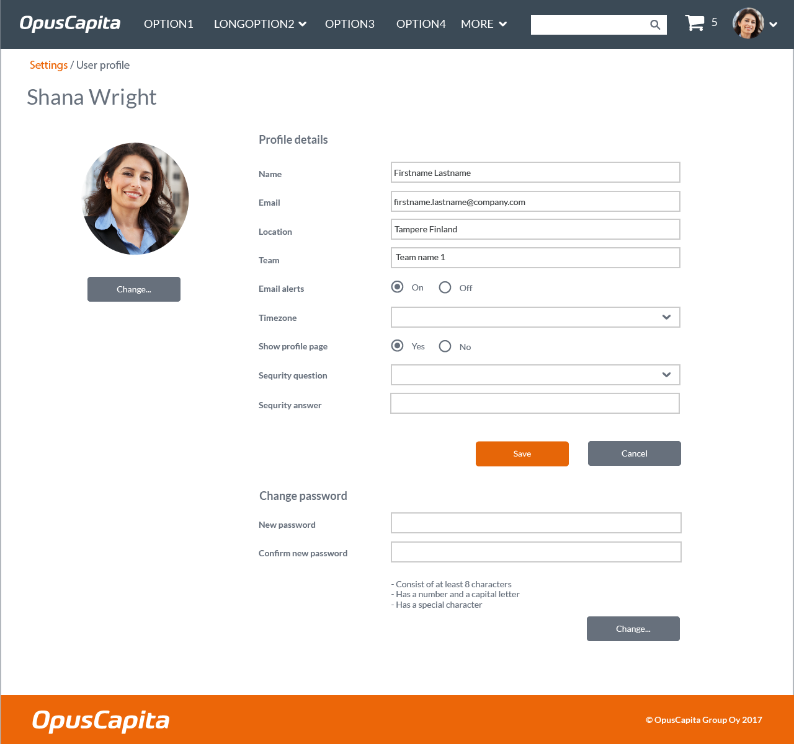
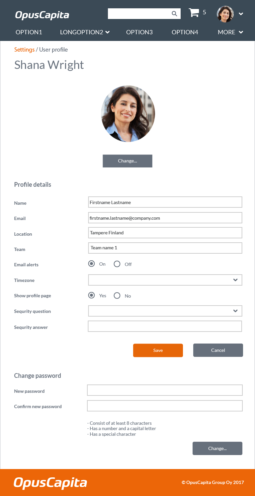

Layout
Header
Header is optional in desktop and mandatory in mobile.
Search
Global
Located at the top of the page.
Component
It is important not to restyle search bars, as their appearance and layout is required to be uniformous everywhere: use common component [not implemented yet].
Content
Main content scrolls vertically by default.
Footer
Footer is optional. The footer contains the OpusCapita logo and a shorthand copyright notice. The footer is located at the bottom of the viewport if the layout is shorter than the viewport. If the layout exceeds the height of the viewport, the footer is found at the bottom of the scrollable content area.
Navigation
Menu
The application menu is rendered as a vertical sidebar on the left border of the viewport. The application menu levels are kept to as few as possible and provide access to the entire suite of installed applications.
Keyboard support and accessibility
Items in the menu that take user to a different view must be anchors: links can be opened in different page and can be copied to clipboard.
Desktop
Menu is shown always.
Mobile
Menu that is toggled via a hamburger icon located on the page heading.
Layout examples for navigation on top

Layout examples for navigation on left
Under work.